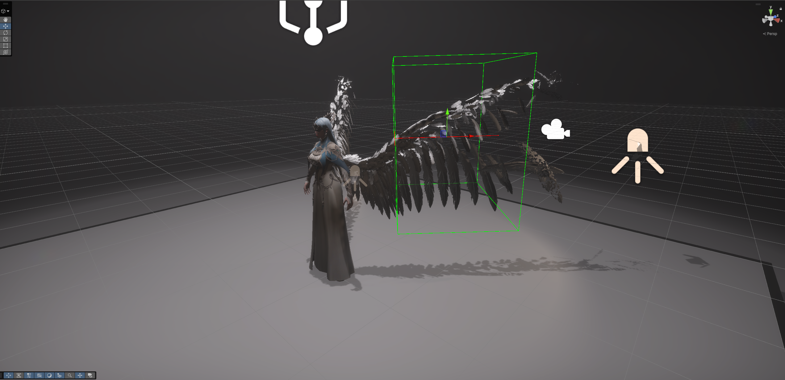
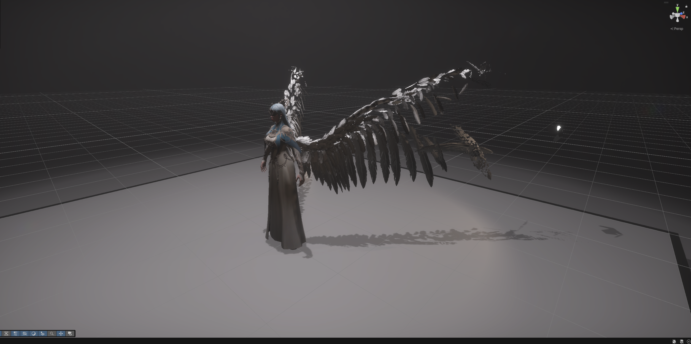

Procedural Feather Animation · Technical Art
Feather Falloff Shader
A procedural wing shader exploring spatially controlled feather disintegration. Baked geometry data and custom shader logic drive feather-level movement, rotation, scaling, and visibility.
Autodesk Maya / Unity HDRP / Shader Graph / HLSL
01 / Overview
A wing, controlled in space.
I built this personal technical art study to explore how baked geometric information could drive procedural animation in a real-time shader. I prepared feather position data in Maya, reconstructed that information in Unity HDRP Shader Graph, and integrated custom HLSL functions with spatial falloff controls to animate the wing's disintegration.
My contributions
- Maya-side position data preparation.
- WingFeather and WingBase Shader Graph architecture.
- Integration of custom HLSL functions.
- Spatial control of per-feather transformations and visibility.

02 / Geometry & data
From Maya geometry to shader data.
The effect begins with information carried by the mesh. The recovered Maya Wing has 15,438 vertices and four UV sets: UVMap, UVMap2, shellPosXY, and shellPosZ.
- 01 / GeometryMaya wing mesh
- 02 / DataAuxiliary UV position data
- 03 / ReconstructionShader-side position information
- 04 / ControlPer-feather transformations

Position information travels with the mesh
Position-like values were stored in the auxiliary shellPosXY and shellPosZ UV sets to support feather-level calculations and transformations in Unity.
The mesh also contains Attribute and worldPos vertex color sets. The green-to-white image is a later spatial visualization reconstructed from worldPos; it documents that reconstructed view, not the original baking procedure.
The named Maya UV sets and Unity channel indices are documented separately: the available media does not verify their exact export mapping.
Baked Position / reconstructing the input
The graph's Baked Position region reads UV2 and UV3. Its visible split, combine, multiply, and transform nodes reconstruct position information for the downstream feather controls.

03 / Shader architecture
One effect, distinct control modules.
WingFeather separates position reconstruction, box-volume sampling, offsets, rotation, scaling, and output into readable regions. The overview shows their connections; the details below isolate the parts that shape the effect.

Spatial falloff / control volume
SampleBoxVolume receives a WorldToBox matrix and position input to evaluate a box-shaped region. Its output feeds the graph's transformation controls.
The X Offset and YZ Offset groups organize the displacement response along different directions. Together, they make the falloff spatially controllable rather than a uniform change across the whole wing.

Procedural rotation & scale
The Rotation group includes the RandomAxisAngle custom function and a Rotate About Axis node. A separate Scale group adds size variation to the displacement and rotation controls.
These modules shape the movement of individual feathers as the spatial control changes. The graph makes their roles and connections visible without establishing the complete randomization or transformation formulas.

WingBase / visibility
WingBase is a separate HDRP Lit graph. Its box-volume-related masking feeds the material's alpha path, with alpha clipping enabled and an Alpha Clip Threshold connection visible.
This keeps the base material's visibility control distinct from WingFeather's transformation network. Both graphs contribute to the same wing effect.

Inspect WingFeather's final vertex and fragment connections

04 / Additional demonstrations
The same effect, seen again.
Three additional recordings show the wing effect from alternate perspectives or control states. They are views of the same shader, not separate effects or development stages.
Additional View 01

Additional View 02
Watch additional view 02 on YouTube ↗Additional View 03
Watch additional view 03 on YouTube ↗05 / Takeaway
Data preparation is part of the effect.
This study connects Maya-side mesh preparation with shader-side procedural control. Carrying position information into the graph creates a foundation for feather-level transformations, while the box-shaped control volume provides a spatial way to direct the disintegration.